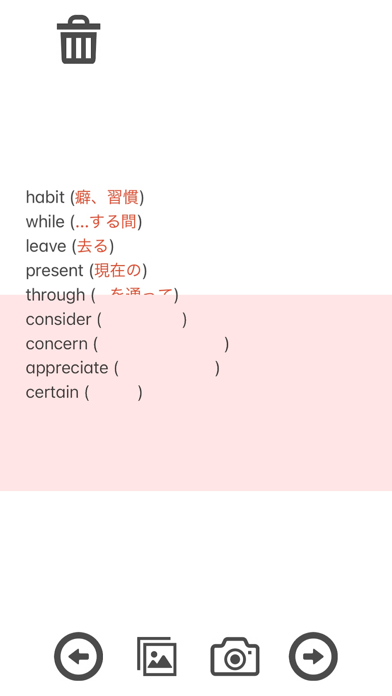

教材を取り込む
赤い文字で答えを書いたノートや教材を撮影するか、写真・スクリーンショットを選びます。
いつものノートを、スマホの暗記帳に。
スマホで赤シートは、写真やスクリーンショットの赤い文字を隠して暗記に使えるiPhoneアプリです。英単語や試験・資格の勉強に、手元の教材を使えます。
App Storeで見るiPhone / iOS 17.0以降 · 価格・対応端末はApp Storeをご確認ください

HOW TO USE
赤い文字で答えを書いたノートや教材を撮影するか、写真・スクリーンショットを選びます。
赤シートの効果を使い、答えを隠して問題を読みます。色の見え方に合わせて明度のしきい値を調整できます。
隠す範囲を動かして答えを確認。保存した画像を開けば、同じページを繰り返し復習できます。
FEATURES
教科書やノートの写真、スマホに保存した教材を暗記に使えます。
カメラに映した教材にも赤シートの効果を使えます。
覚えたい箇所を赤字にして、答えを見ずに思い出す練習に使ってください。
FAQ
赤い文字を対象にした機能です。文字の色や背景、撮影時の明るさによって隠れ方が変わります。明度のしきい値を調整し、答えが見えないか確認してください。
写真に撮って取り込むか、カメラで映して使えます。赤い文字で答えが書かれたページに向いています。
このページで案内しているのは写真・スクリーンショットの取り込みです。PDF教材は、使いたいページを画像にしてから取り込んでください。
データの取り扱いはプライバシーポリシーをご確認ください。
2.3では、使いやすさの改善に役立てるための利用状況分析を追加しました。
2026年10月18日確認：バージョン 2.3。最新の配信状況はApp Storeをご確認ください。